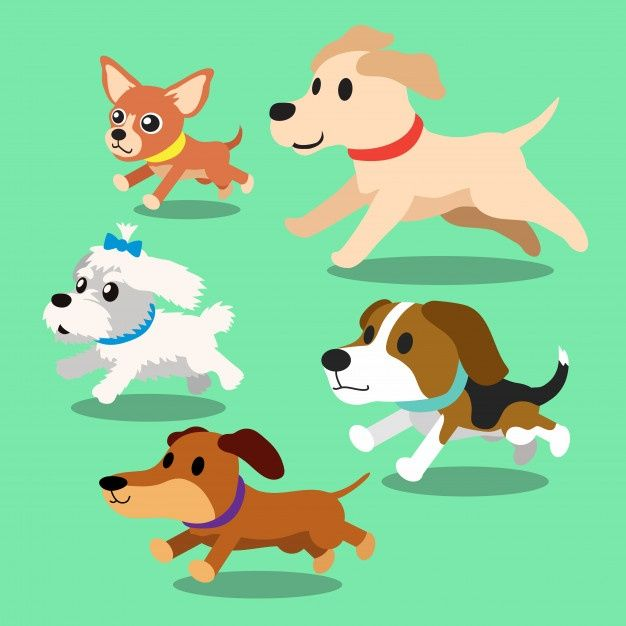

|
ONG - Ayuda a un Peludo |
En nuestra ONG "Ayuda a un peludo" tenemos como meta poder ayudar a todos los perros y gatos que se encuentren en situacion de calle o abandonados dandoles un lugar donde vivir, una familia a la cual pueden optar y poder cambiarles la vida de manera digna. Esta iniciativa ha ayudado a muchos animales en las calles, salvandoles la vida de cualquier tipo de accidente, enfermedades o directamente de personas que les puedan hacer daño.
